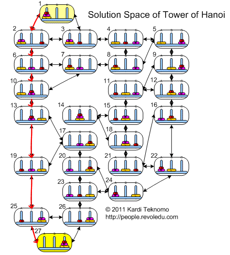

There are many ways to solve tower of hanoi, but is there a way to find the minimum number of optimal steps? Which action would be best to take?
In this case there may too many states to cover, so we will just be adding states randomly or states that are important:
The states are already in the picture filtered out unecessary states
Syntax: state action reward next-state
Results: (Note: Press compute policy button multiple times until it gets the optimal policy)
Per Action: